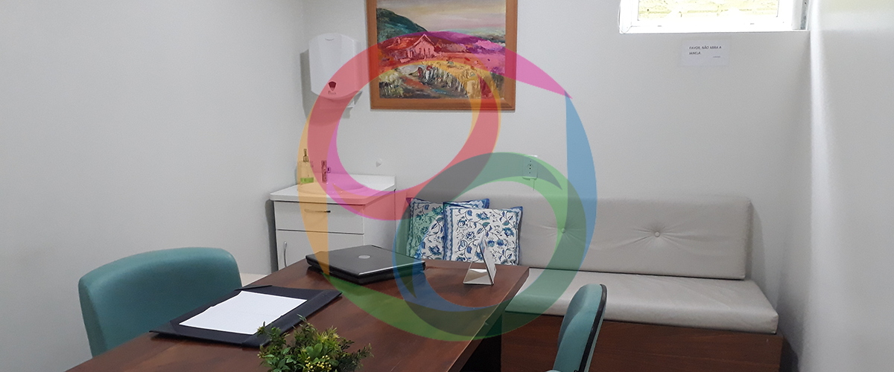
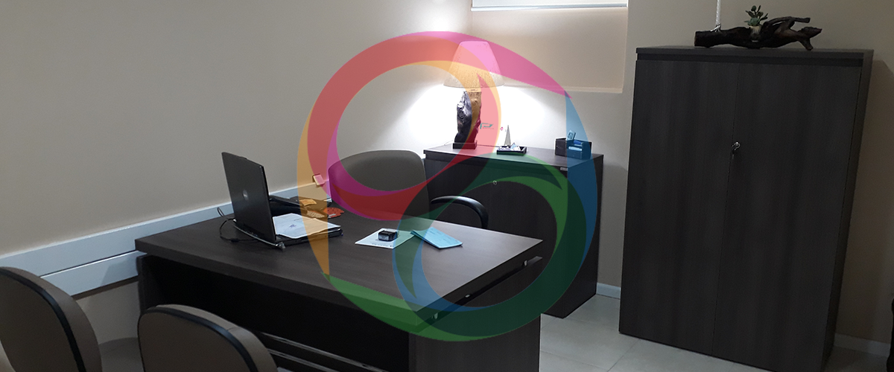

Ambulatório
Conheça os serviços ambulatoriais oferecidos pela clínica.
- 
- 
Atendimento ambulatorial
A organização do tratamento em saúde mental depende de muitas variáveis como estado clínico, motivação para o tratamento, clareza em relação ao diagnóstico e necessidade de avaliação de urgência. O Atendimento Ambulatorial ou de Consultório é indicado para pessoas que estejam em sofrimento ou em dúvida em relação a como delinear seu planejamento terapêutico. Na consulta médica, o profissional organizará em parceria com o paciente e/ou com a família a melhor estratégia para resolver os problemas que estejam acontecendo. Agende uma avaliação para compreender como podemos lhe ajudar a voltar para seu caminho.
Consulta Psiquiátrica
A Psiquiatria é reconhecida como uma especialidade médica que lida com o órgão mais importante do corpo. Os psiquiatras lidam com as áreas do cérebro responsáveis por emoções, pensamentos, sentimentos, comportamentos, impulsos, comunicação e interação social. A avaliação com o(a) médico(a) psiquiatra conseguirá lhe auxiliar a compreender se seu sofrimento e sintomas na verdade constituem uma alteração dos neurônios e se há benefício de um medicamento para melhorar o funcionamento do cérebro, auxiliando o processo de recuperação. O tratamento complementar às medicações é a Psicoterapia, onde se utilizam técnicas verbais para compreender a origem do sofrimento e lidar com ele, buscando um novo significado para experiências do passado.
Consulta Psicológica
Conversar com um amigo é sempre agradável, pois nos traz alegria nos bons momentos e afago nas horas difíceis. Ao fazer uma avaliação ou tratamento com um profissional de saúde mental, ele lança mão do vínculo e também de técnicas aprendidas em duas décadas de treinamento e orientadas por mais de um século de trabalhos e estudos científicos. A avaliação psiquiátrica e a avaliação psicológica identificam necessidade de intervenção psicoterápica.
Horário de funcionamento
O horário de funcionamento do ambulatório: segunda à sexta das 8:00 às 19:30 e aos sábados das 8:00 às 11:30. Os atendimentos são por convênios ou particulares.